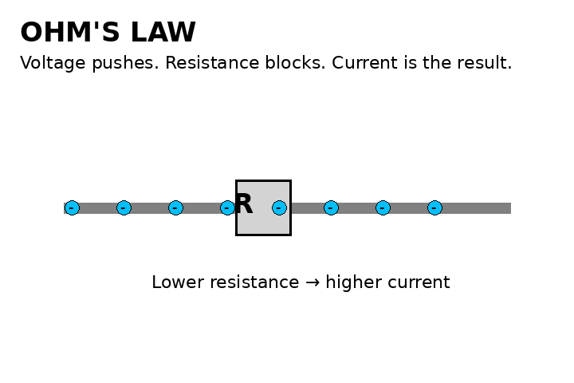

Chemistry
Chemical reactions, acids and bases, periodic trends at an introductory level, and reaction applications.
Deepen general science and prepare for senior Biology, Chemistry, and Physics.

Chemical reactions, acids and bases, periodic trends at an introductory level, and reaction applications.

Motion, speed and acceleration foundations; light and geometric optics in common Grade 10 pathways.

Tissues, organs, systems, and cell specialization.

Climate change, Earth systems, and interactions between science, technology, society, and environment.

Build the algebra, graphing, lab, and scientific-reasoning skills needed for Grade 11 science courses.